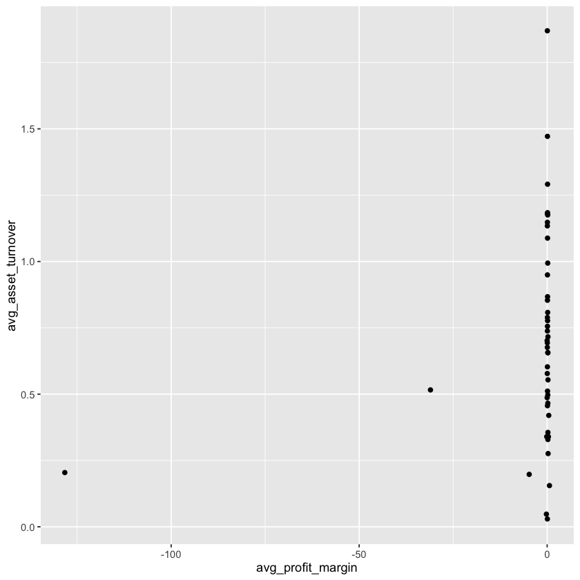
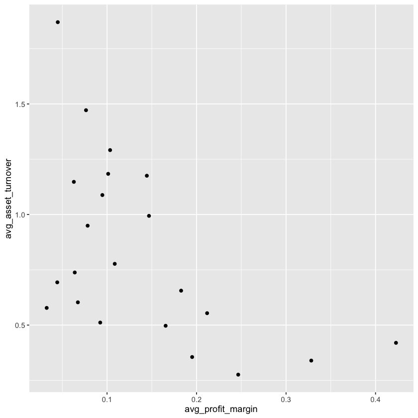
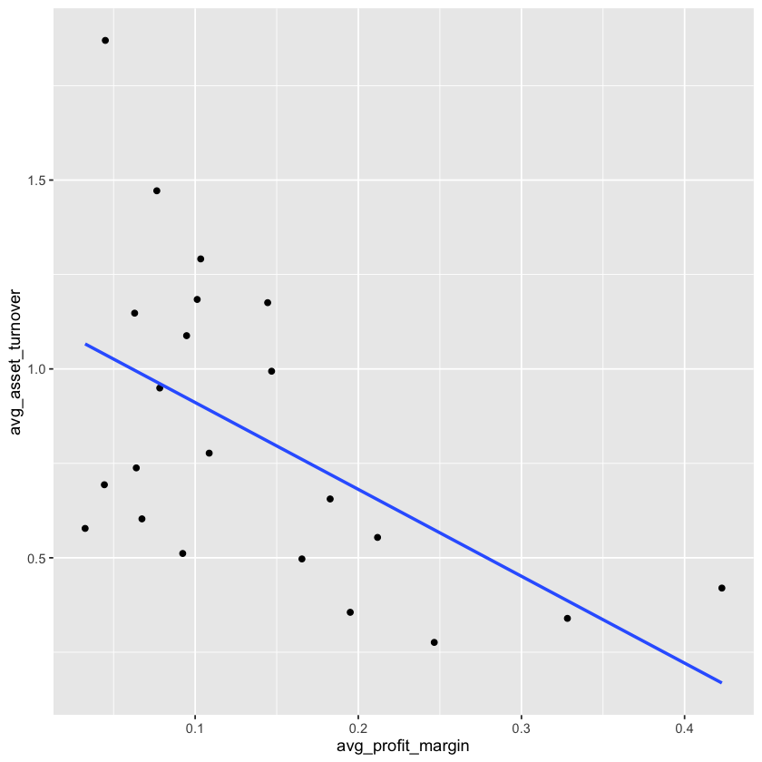

Tutorial Class 04 Set 01 - Data Wrangling for Business Analytics¶
Learning Goals¶
By the end of this tutorial, you should be able to:
- Recognize and choose appropriate
dplyrverbs for filtering rows, creating variables, selecting columns, ranking observations, and summarising groups. - Create and verify key strategy variables by using
filter()andmutate()to constructprofit_marginandasset_turnover, then checking whether the results are sensible. - Compare firms on different dimensions of performance by identifying those with the highest profit margins and those with the highest asset turnover.
- Analyse industry-level patterns by using
group_by()andsummarise()to calculate and interpret grouped summaries. - Evaluate the limits of summary measures by explaining why averages may hide important differences within industries.
- Synthesize results for decision-makers by communicating the main findings in a short executive-style summary.
The Business Challenge¶
The Topic: Understanding firm strategy in the Australian economy¶
Firms can generate strong results in different ways. One firm may earn a lot of profit from each dollar of sales. Another may earn less on each sale, but generate very high sales relative to the assets it uses. These are different ways of operating, and they often reflect differences in business model and industry structure.
In this tutorial, we focus on two measures:
These measures help us think about two different dimensions of performance:
- Profit margin tells us how much profit a firm earns from each dollar of sales
- Asset turnover tells us how effectively a firm turns its asset base into sales
Using dplyr, we will create these variables, check that they were calculated correctly, and then use them to answer a series of business questions.
In particular, we will ask:
- Which firms appear strongest on profit margin, and which appear strongest on asset turnover?
- Do the same firms appear at the top of both rankings, or do different firms succeed in different ways?
- When we move from individual firms to industries, do the same patterns still appear?
- Do some industries seem to rely more on high margins, while others rely more on high turnover?
- What do these patterns suggest about how executives should interpret firm performance?
By the end of the tutorial, you should be able to use dplyr to turn raw accounting data into a short executive-style summary of how firms and industries generate strong results.
The Data: Financial Statement Observations from Yahoo Finance¶
To answer these questions, we draw on audited 2024 financial statements for the 200 largest ASX-listed firms (as measured by assets).
Financial statements provide a standardised snapshot of a company’s performance and financial health. In our data set, the key variables are:
- Company name (
conml) – the name of the firm as listed on the ASX - Industry (
industry) – the industry classification, allowing comparison across sectors such as mining, banking, or healthcare - Profit (
ebit) – earnings before interest and taxes, representing core business profit after expenses (from the income statement) - Assets (
at) – the total resources the company owns that have economic value (from the balance sheet) - Invested Capital (
invested_capital) – the total capital invested in the company by both shareholders and debt holders to fund operations and growth. It generally includes:
By working with these statements and variables, we can replicate the kind of assessments that professional analysts and fund managers use to guide billion-dollar investment decisions.
As you will see, just a few lines of R code can wrangle raw financial statements information into orderly data summaries that allow us to understand how businesses across different industry sectors perform across various metrics.
R packages for today¶
library(tidyverse) # collection of packages for data manipulation and visualization
Prepare these Exercises before Class¶
Prepare these exercises before coming to class. Plan to spend 45 minutes on these exercises.
Exercise 1: Meet the Main dplyr Verbs¶
In this tutorial, we will use a small set of dplyr verbs to build variables, inspect data, rank firms, and compare industries.
Before we start coding, it helps to know what each verb is designed to do.
(a)
Match each dplyr verb below to its plain-English meaning.
-
Verb:
filter()mutate()select()arrange()slice_max()group_by()summarise()
-
Meaning:
- A. Create a new variable
- B. Sort the rows
- C. Keep only the rows that match a condition
- D. Keep only the columns you want
- E. Keep the top rows based on a variable
- F. Split the data into groups
- G. Collapse many rows into summary measures
(b)
For each business task below, write the dplyr verb that best fits the task.
- Keep only firms with positive sales and positive assets
- Create a new variable called
profit_margin - Show only company name, sales, and profit margin
- Sort firms from highest to lowest profit margin
- Keep the five firms with the highest asset turnover
- Set up the data so that each industry is analysed separately
- Calculate the average ROIC for each industry
Solution
Here is one set of correct answers.
(a)
Match each dplyr verb below to its plain-English meaning.
filter(): C. Keep only the rows that match a conditionmutate(): A. Create a new variableselect(): D. Keep only the columns you wantarrange(): B. Sort the rowsslice_max(): E. Keep the top rows based on a variablegroup_by(): F. Split the data into groupssummarise(): G. Collapse many rows into summary measures
(b)
For each business task below, write the dplyr verb that best fits the job.
- Keep only firms with positive sales and positive assets:
filter() - Create a new variable called
profit_margin:mutate() - Show only company name, sales, and profit margin:
select() - Sort firms from highest to lowest profit margin:
arrange() - Keep the five firms with the highest asset turnover:
slice_max() - Set up the data so that each industry is analysed separately:
group_by() - Calculate the average ROIC for each industry :
summarise()
Exercise 2: Understanding the Pipe Operator¶
In this exercise, we use two animals — a lion and a giraffe — to explore how the pipe operator, |>, works. This lets us focus on the order of the steps without needing to think about data yet.
Suppose we start with an object called lion. We want the lion to do the following actions in order:
- stand up
- lift its head by 30 degrees
- roar at volume 10
(a)
One way to write this is to create a new object after each step.
lion_step1 <- stand_up(lion)
lion_step2 <- lift_head(lion_step1, angle = 30)
lion_step3 <- roar(lion_step2, volume = 10)
What does lion_step2 represent?
(b)
We could also write the same sequence by placing one function inside another.
roar(lift_head(stand_up(lion), angle = 30), volume = 10)
This version is shorter, but it can be harder to read because we have to work from the inside out.
Which function runs first in this version?
(c)
The pipe operator lets us write the same sequence in the order the actions happen.
lion |>
stand_up() |>
lift_head(angle = 30) |>
roar(volume = 10)
In the line lift_head(angle = 30), what is being piped in, and what is the extra argument?
(d)
Now try this yourself. Suppose we start with an object called giraffe. We want the giraffe to do the following actions in order:
- step forward by 2 steps
- lower its neck by 45 degrees
- drink water for 5 seconds
Write this sequence in the three ways shown above.
Step-by-step with intermediate objects
# Write your answer here
Function inside function
# Write your answer here
With the pipe
# Write your answer here
(e)
Complete the sentence: The pipe operator takes _ and passes it into _.
(f)
In one sentence, explain how the pipe helps us write code in an “and then” way.
Solution
(a)
lion_step2 represents the lion after it has stood up and then lifted its head by 30 degrees.
(b)
The first function to run is stand_up().
(c)
The object being piped in is the lion. The extra argument is angle = 30.
(d)
One correct way to write the giraffe sequence is shown below.
Step-by-step with intermediate objects
giraffe_step1 <- step_forward(giraffe, steps = 2)
giraffe_step2 <- lower_neck(giraffe_step1, angle = 45)
giraffe_step3 <- drink_water(giraffe_step2, seconds = 5)
Function inside function
drink_water(lower_neck(step_forward(giraffe, steps = 2), angle = 45), seconds = 5)
With the pipe
giraffe |>
step_forward(steps = 2) |>
lower_neck(angle = 45) |>
drink_water(seconds = 5)
(e)
One correct completion is: The pipe operator takes an object and passes it into the next function.
(f)
One possible answer is: The pipe helps us write code as a sequence of actions: do this, and then this, and then this.
Exercise 3: Create the Analysis Dataset¶
In the rest of this tutorial, we will work with a dataset called firm_strategy. To create firm_strategy, we need to construct some variables from the ASX dataset.
(a)
Load the ASX data located in data/asx_200_2024.csv into an object called asx_data.
asx_data <- YOUR_CODE_HERE
(b)
We now want to create a new dataset called firm_strategy from asx_data.
To do this, we need to:
- keep only firms for which the ratios can be calculated sensibly, and
-
create two new variables:
profit_marginasset_turnover
Before writing any code, look at the formulas for these variables and think about which original variables must be strictly positive.
(c)
Use your answer to complete the code below. Replace YOUR_CONDITIONS and fill in the two missing ratio definitions.
firm_strategy <- asx_data |>
filter(YOUR_CONDITIONS) |>
YOUR_CODE_HERE(
profit_margin = YOUR_CODE_HERE,
asset_turnover = YOUR_CODE_HERE
)
(d)
In one sentence, explain why we use filter() before mutate() in our solution to (c).
Solution
(a)
Load the ASX data into an object called asx_data.
asx_data <- read_csv("data/asx_200_2024.csv")
(b). The variables that must be strictly positive are the ones in the denominators of the ratios:
saleforprofit_marginatforasset_turnover
(c). One correct completed version is:
firm_strategy <-
asx_data |>
filter(sale > 0, at > 0) |>
mutate(
profit_margin = ebit / sale,
asset_turnover = sale / at
)
(d).
One possible answer is: We use filter() before mutate() so that we only calculate the ratios for firms where the denominators are valid.
Exercise 4: Create a Smaller Checking Dataset¶
We have now created a new dataset called firm_strategy. Before moving on, it is good practice to check that the new variables were created correctly. One useful way to do this is to create a smaller dataset that contains only the variables we need for checking.
(a)
Create a new object called firm_strategy_check that keeps only the following variables:
conmlebitatsaleprofit_marginasset_turnover
firm_strategy_check <-
firm_strategy |>
YOUR_FUNCTION(YOUR_VARIABLES)
(b)
Display the first 10 rows of firm_strategy_check. You may find the command slice_head(n = 10) helpful here.
firm_strategy_check |>
YOUR_CODE
(c)
Why might it be useful to create a smaller checking dataset instead of inspecting the full firm_strategy dataset?
(d)
Looking at a few rows is a useful first step, but it might not scale well to a large dataset where we compute hundreds of variables. What might be a more scalable next step if you wanted to check whether profit_margin and asset_turnover look reasonable across all firms?
Solution
(a)
Create a new object called firm_strategy_check that keeps only the listed variables.
firm_strategy_check <-
firm_strategy |>
select(conml, ebit, at, sale, profit_margin, asset_turnover)
(b)
Display the first 10 rows.
firm_strategy_check |>
slice_head(n = 10)
| conml <chr> | ebit <dbl> | at <dbl> | sale <dbl> | profit_margin <dbl> | asset_turnover <dbl> |
|------------------------|------------|----------|------------|---------------------|----------------------|
| BHP Group Ltd | 22771.0 | 102362 | 55658.0 | 0.40912358 | 0.5437369 |
| Telstra Group Limited | 3712.0 | 45550 | 22928.0 | 0.16189812 | 0.5033589 |
| CSL Ltd | 3896.0 | 38022 | 14690.0 | 0.26521443 | 0.3863553 |
| Transurban Group | 1132.0 | 36694 | 4119.0 | 0.27482399 | 0.1122527 |
| Woolworths Group Ltd | 3100.0 | 33936 | 67922.0 | 0.04564059 | 2.0014734 |
| Fortescue Ltd | 8520.0 | 30060 | 18220.0 | 0.46761800 | 0.6061211 |
| Wesfarmers Ltd | 3849.0 | 27309 | 44189.0 | 0.08710313 | 1.6181112 |
| Ramsay Health Care Ltd | 938.7 | 20894 | 16660.2 | 0.05634386 | 0.7973677 |
| Qantas Airways Ltd | 2198.0 | 20564 | 20114.0 | 0.10927712 | 0.9781171 |
| Origin Energy Ltd | 952.0 | 20454 | 16138.0 | 0.05899120 | 0.7889899 |
(c)
One possible answer is: A smaller checking dataset makes it easier to focus only on the variables needed to verify the new calculations.
(d)
One possible answer is: A more scalable next step would be to create summary statistics for the new variables so we can check their overall patterns and identify unusual or extreme values.
In-Class Exercises¶
You will discuss these exercises in class with your peers in small groups and with your tutor. These exercises build from the exercises you have prepared above, you will get the most value from the class if you have completed those above before coming to class.
Exercise 5: Which Firms Rely Most on Margin? Which Rely Most on Volume?¶
Some firms generate strong profits from each dollar of sales. Others generate large sales from a given asset base. In this exercise, we compare firms at the top of each of these two dimensions.
(a)
Use slice_max() to identify the five firms with the highest profit_margin.
Your table should include:
conmlindustryebitatsaleprofit_marginasset_turnover
firm_strategy |>
slice_max(YOUR_CODE_HERE) |>
select(YOUR_VARIABLES_HERE)
(b)
Now produce the equivalent table for the five firms with the highest asset_turnover.
firm_strategy |>
slice_max(YOUR_CODE_HERE) |>
select(YOUR_VARIABLES_HERE)
(c)
Compare the two tables.
- Do the same firms appear in both tables?
- What kinds of industries seem more common in each table?
- What does this suggest about different ways firms generate profits?
Solution
(a)
Use slice_max() to identify the five firms with the highest profit_margin.
firm_strategy |>
slice_max(profit_margin, n = 5) |>
select(conml, industry, profit_margin, asset_turnover)
| conml <chr> | industry <chr> | profit_margin <dbl> | asset_turnover <dbl> |
|----------------------|---------------------|---------------------|----------------------|
| Aft Corporation Ltd | Building Products | 0.9453009 | 0.0520372 |
| APA Group | Gas Utilities | 0.6087529 | 0.1553443 |
| Fortescue Ltd | Metals & Mining | 0.4676180 | 0.6061211 |
| Perseus Mining Ltd | Metals & Mining | 0.4506058 | 0.5165708 |
| Emerald Resources NL | Metals & Mining | 0.4280829 | 0.5208612 |
(b)
Produce the equivalent table for the five firms with the highest asset_turnover.
firm_strategy |>
slice_max(asset_turnover, n = 5) |>
select(conml, industry, profit_margin, asset_turnover)
| conml <chr> | industry <chr> | profit_margin <dbl> | asset_turnover <dbl> |
|------------------------------|-------------------------------------------------------|---------------------|----------------------|
| Peoplein Limited | Professional Services | 0.010606953 | 3.018577 |
| Jb Hi-Fi Ltd | Specialty Retail | 0.067282432 | 2.751219 |
| Mader Group Ltd | Commercial Services & Supplies | 0.092984640 | 2.291710 |
| Monadelphous Group Ltd Mndda | Construction & Engineering | 0.041513159 | 2.271804 |
| Graincorp Ltd | Consumer Staples Distribution & Retail (New Name) | 0.003334973 | 2.239939 |
(c)
One possible interpretation is:
- The same firms do not appear in both tables, which suggests that high profit margin and high asset turnover capture different ways of operating.
- Firms in the high-margin table earn more profit from each dollar of sales. These firms may benefit from pricing power, favourable cost conditions, scarce resources, or stable demand.
- In this output, the high-margin table includes industries such as mining, gas utilities, and building products.
- This makes economic sense because some firms in these sectors can earn strong margins without needing extremely high sales relative to their asset base.
- Firms in the high-turnover table generate more sales from a given asset base. These firms may rely more on high volume, fast-moving sales, or relatively asset-light operations.
- In this output, the high-turnover table includes industries such as professional services, specialty retail, commercial services, construction and engineering, and distribution/retail.
- This also makes sense because firms in these sectors often operate by generating lots of sales or work relative to the assets recorded on their balance sheets.
- The broader lesson is that firms can generate strong performance in different ways: some rely more on margin, while others rely more on turning assets into sales quickly.
- A useful intuition is that a mining firm may sell fewer units but earn much more on each sale, while a retailer may earn much less on each sale but sell many more units.
In the next exercise we will see how this relates to industry sectors as a whole.
Exercise 6: Comparing Industries Using Average Values¶
In Exercise 5, you compared individual firms at the top of the profit margin and asset turnover distributions. We now take a step back and look at broader patterns across industries. To do this, we will group the data by industry and calculate average values for each group.
(a)
Complete the code below to create a summary table that shows, for each industry:
- the number of firms
- average
profit_margin - average
asset_turnover
industry_summary <-
firm_strategy |>
group_by(YOUR_VARIABLE) |>
summarise(
n_firms = n(),
avg_profit_margin = mean(YOUR_VARIABLE, na.rm = TRUE),
avg_asset_turnover = YOUR_CODE
)
(b)
Now focus only on industries with at least 3 firms, and sort industry_summary from highest to lowest average profit_margin.
industry_summary |>
filter(YOUR_CONDITION) |>
arrange(YOUR_CODE)
(c)
Which industries appear near the top of the table when sorted by average profit_margin? What does this suggest about how firms in these industries tend to make money?
(d)
Again focusing only on industries with at least 3 firms, sort industry_summary from highest to lowest average asset_turnover.
industry_summary |>
YOUR_CODE |>
YOUR_CODE
(e)
Compare the two rankings. How do these industry-level patterns comapre to what you saw earlier in Exercise 5, where different kinds of firms appeared in the high-margin and high-turnover tables?
(f)
In this exercise, we focused on industries with at least 3 firms. Why might that be useful? And even after doing this, why might an average still give a slightly misleading picture of an industry?
(g)
In this exercise, we focused on industry averages. Another summary measure analysts often use is the standard deviation, which tells us how spread out the firms in an industry are. What do you think it would mean if an industry had:
- a high standard deviation in
profit_margin? - a low standard deviation in
profit_margin?
Solution
(a)
Create a summary table by industry.
industry_summary <-
firm_strategy |>
group_by(industry) |>
summarise(
n_firms = n(),
avg_profit_margin = mean(profit_margin, na.rm = TRUE),
avg_asset_turnover = mean(asset_turnover, na.rm = TRUE)
)
(b)
Focus on industries with at least 3 firms and sort from highest to lowest average profit_margin.
industry_summary |>
filter(n_firms >= 3) |>
arrange(desc(avg_profit_margin))
| industry <chr> | n_firms <int> | avg_profit_margin <dbl> | avg_asset_turnover <dbl> |
|-------------------------------------------------------|---------------|-------------------------|--------------------------|
| Building Products | 3 | 0.42285722 | 0.4198521 |
| Interactive Media & Services | 4 | 0.32817801 | 0.3396100 |
| Insurance | 3 | 0.24656033 | 0.2760308 |
| Software | 4 | 0.21179838 | 0.5539411 |
| Financial Services (New Name) | 4 | 0.19506814 | 0.3556962 |
| Automobile Components (New Name) | 3 | 0.18275401 | 0.6557444 |
| Diversified Consumer Services | 3 | 0.16544826 | 0.4969783 |
| Commercial Services & Supplies | 7 | 0.14685573 | 0.9939687 |
| Professional Services | 4 | 0.14445095 | 1.1754022 |
| Ground Transportation (New Name) | 4 | 0.10859798 | 0.7770267 |
| Specialty Retail | 14 | 0.10340479 | 1.2912573 |
| Broadline Retail (New Name) | 4 | 0.10124671 | 1.1839357 |
| Trading Companies & Distributors | 5 | 0.09476225 | 1.0880643 |
| IT Services | 3 | 0.09237143 | 0.5114577 |
| Media | 4 | 0.07830369 | 0.9494900 |
| Construction & Engineering | 11 | 0.07649510 | 1.4716446 |
| Hotels, Restaurants & Leisure | 11 | 0.06738541 | 0.6030397 |
| Chemicals | 4 | 0.06391076 | 0.7379821 |
| Food Products | 7 | 0.06290191 | 1.1476535 |
| Consumer Staples Distribution & Retail (New Name) | 4 | 0.04494600 | 1.8697141 |
| Health Care Providers & Services | 7 | 0.04435279 | 0.6933983 |
| Diversified Telecommunication Services | 4 | 0.03255521 | 0.5777693 |
| Metals & Mining | 39 | -31.03751117 | 0.5159214 |
| Oil, Gas & Consumable Fuels | 7 | -128.28563205 | 0.2044451 |
(c)
Industries near the top of the avg_profit_margin ranking include Building Products, Interactive Media & Services, Insurance, Software, and Financial Services.
-
These industries may be able to earn more profit from each dollar of sales because they rely less on very high sales volume and more on pricing power, specialised products or services, scale economies in intangible activities, or business models where a larger share of revenue can be retained as profit.
-
This suggests that firms in these industries often succeed by earning relatively high margin on each sale rather than by generating extremely high turnover.
(d)
Again focusing on industries with at least 3 firms, sort from highest to lowest average asset_turnover.
industry_summary |>
filter(n_firms >= 3) |>
arrange(desc(avg_asset_turnover))
| industry <chr> | n_firms <int> | avg_profit_margin <dbl> | avg_asset_turnover <dbl> |
|-------------------------------------------------------|---------------|-------------------------|--------------------------|
| Consumer Staples Distribution & Retail (New Name) | 4 | 0.04494600 | 1.8697141 |
| Construction & Engineering | 11 | 0.07649510 | 1.4716446 |
| Specialty Retail | 14 | 0.10340479 | 1.2912573 |
| Broadline Retail (New Name) | 4 | 0.10124671 | 1.1839357 |
| Professional Services | 4 | 0.14445095 | 1.1754022 |
| Food Products | 7 | 0.06290191 | 1.1476535 |
| Trading Companies & Distributors | 5 | 0.09476225 | 1.0880643 |
| Commercial Services & Supplies | 7 | 0.14685573 | 0.9939687 |
| Media | 4 | 0.07830369 | 0.9494900 |
| Ground Transportation (New Name) | 4 | 0.10859798 | 0.7770267 |
| Chemicals | 4 | 0.06391076 | 0.7379821 |
| Health Care Providers & Services | 7 | 0.04435279 | 0.6933983 |
| Automobile Components (New Name) | 3 | 0.18275401 | 0.6557444 |
| Hotels, Restaurants & Leisure | 11 | 0.06738541 | 0.6030397 |
| Diversified Telecommunication Services | 4 | 0.03255521 | 0.5777693 |
| Software | 4 | 0.21179838 | 0.5539411 |
| Metals & Mining | 39 | -31.03751117 | 0.5159214 |
| IT Services | 3 | 0.09237143 | 0.5114577 |
| Diversified Consumer Services | 3 | 0.16544826 | 0.4969783 |
| Building Products | 3 | 0.42285722 | 0.4198521 |
| Financial Services (New Name) | 4 | 0.19506814 | 0.3556962 |
| Interactive Media & Services | 4 | 0.32817801 | 0.3396100 |
| Insurance | 3 | 0.24656033 | 0.2760308 |
| Oil, Gas & Consumable Fuels | 7 | -128.28563205 | 0.2044451 |
(e).
The industries near the top of the avg_asset_turnover ranking include Consumer Staples Distribution & Retail, Construction & Engineering, Specialty Retail, Broadline Retail, and Professional Services.
- These sectors often generate large sales relative to their asset base because they depend more on high volume, fast-moving goods or projects, service delivery models that generate substantial revenue without a very large stock of physical assets, or operational models built around turning assets into revenue quickly.
- The two rankings are different, which suggests that industries vary in how firms generate performance.
- The firm-level differences seen earlier reflect broader industry patterns in how sectors operate.
- It is also useful to notice that some industries, such as Professional Services and Commercial Services & Supplies, perform reasonably well on both dimensions, which suggests that not every industry fits neatly into only one strategy type.
(f)
One possible interpretation is:
- Focusing on industries with at least 3 firms helps reduce the risk of over-interpreting averages based on only one or two companies.
- Even after doing this, an average can still be misleading if firms within the industry differ a lot from one another or if one unusual firm pulls the average up or down.
- This is why averages are useful, but they do not tell us everything about the full distribution of firms within an industry.
(g)
One possible interpretation is:
- A high standard deviation in
profit_marginwould mean that firms in the industry differ a lot in how much profit they earn from each dollar of sales. - A low standard deviation in
profit_marginwould mean that firms in the industry are more similar to one another on this measure. - This means that two industries could have similar average profit margins but very different amounts of variation across firms.
Exercise 7: Summarising the Findings for Executives¶
Imagine you work at a large consulting company that is preparing an annual report on the financial results of Australian firms.
Your team has been asked to analyse how large Australian listed firms generate strong results across different industries. As part of this project, you need to present an interim result to the executives overseeing the report.
Write 3–4 sentences that could appear in the interim report’s executive summary.
Your summary should answer the following:
- What did you analyse?
- What were the main patterns you found?
- What is the main business lessons one should take from these results?
Write for a non-technical audience and focus on the business meaning of the results.
Solution
Here is one strong example of the kind of answer we are aiming for.
- We analysed how the 200 largest ASX-listed firms generate performance by examining profit margins and asset turnover across their 2024 financial statements.
- Industries tend to generate strong performance in one of two ways. Some — such as mining and software — earn a large share of each sales dollar as profit, often because of pricing power or the economics of scaling intangible products. Others — such as retail and distribution — generate large sales relative to their asset base by operating at high volume or through asset-light business models.
- The key lesson is that benchmarking firms using a single metric in isolation, without accounting for these industry structures, risks drawing misleading conclusions and steering corporate strategy in the wrong direction.
A strong answer will include all four of these elements. Use this checklist when reviewing student responses:
- Identifies what was analysed and names specific industries as examples
- Notes that industries differ on margin vs. turnover, and gives economic reasoning for why — e.g. pricing power / scarce resources / intangible scale for high-margin industries; volume / asset-light models for high-turnover industries
- Notes that the tradeoff is a tendency, not a universal rule — e.g. professional services performs reasonably well on both
- Closes with a specific, actionable executive takeaway — not just “don’t use one metric” but “metrics must be interpreted relative to how that industry creates value”
A weaker answer typically:
- Describes the code or process rather than the findings
- Names the pattern without explaining the economic reasoning behind it
- Ends with a vague takeaway that does not guide executive action
- Misses the nuance that the tradeoff is not universal across all industries
Exercise 8 [Optional]: Visualising the Profit Margin – Asset Turnover Relationship¶
In Exercises 5 and 6, you identified that firms and industries tend to perform strongly on either profit margin or asset turnover, but rarely both. In this exercise, you will visualise that pattern using a scatter plot.
(a)
Using industry_summary, create a scatter plot with avg_profit_margin on the x-axis and avg_asset_turnover on the y-axis.
industry_summary |>
ggplot(aes(x = YOUR_VARIABLE, y = YOUR_VARIABLE)) +
YOUR_CODE()
(b)
Does the plot look the way you expected? Is anything making it hard to read?
(c)
Filter industry_summary to keep only industries with at least 3 firms and an average profit margin above -5, then recreate the scatter plot from (a).
industry_summary |>
filter(YOUR_CONDITIONS) |>
ggplot(aes(x = YOUR_VARIABLE, y = YOUR_VARIABLE)) +
YOUR_CODE()
(d)
Add a geom_smooth() layer to the plot from (b).
industry_summary |>
filter(YOUR_CONDITIONS) |>
ggplot(aes(x = YOUR_VARIABLE, y = YOUR_VARIABLE)) +
YOUR_CODE() +
YOUR_CODE(method = "lm", se = FALSE)
(e).
What does the line suggest about the relationship between average profit margin and average asset turnover across industries?
Solution
(a)
industry_summary |>
ggplot(aes(x = avg_profit_margin, y = avg_asset_turnover)) +
geom_point()

(b)
The unfiltered plot displays all industries but may have a distorted x-axis due to one or two industries with very negative average profit margins
(c)
industry_summary |>
filter(
n_firms >= 3,
avg_profit_margin > -0.5
) |>
ggplot(aes(x = avg_profit_margin, y = avg_asset_turnover)) +
geom_point()

(d)
industry_summary |>
filter(n_firms >= 3, avg_profit_margin > -0.5) |>
ggplot(aes(x = avg_profit_margin, y = avg_asset_turnover)) +
geom_point() +
geom_smooth(method = "lm", se = FALSE)

(e)
We filter before plotting because extreme or unreliable values can distort the picture and lead to misleading conclusions.